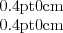

This procedure calls itself recursively in order to generate the required digits in the required order. It might be possible to code this procedure more efficiently but not more completely. (Anyway, in view of the implementation of ``putchar'', efficiency is hardly a consideration here.)
Suppose n = A*b + B where A = ldiv(n,b) and where B = lrem(n,b) satisfies . Then in order to display the value for n, we need to display the value for A followed by the value for B.
The latter is easy for b = 8 or 10: it consists of a single character. The former is easy if A = 0. It is also easy if ``printn'' is called recursively. Since A  n, the chain of recursive calls must terminate.
The procedures ``ldiv'' and ``lrem'' treat their first parameter as an unsigned integer (i.e. no sign extension, when a 16 bit value is extended to a 32 bit value before the actual division operation). They may be found beginning on lines 1392 and 1400 respectively.